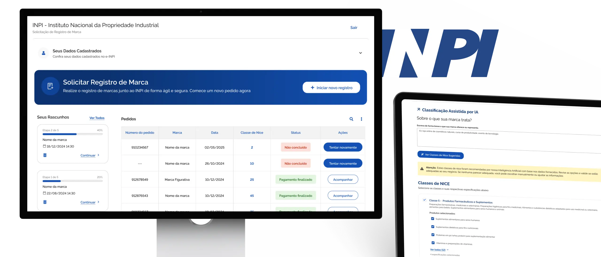
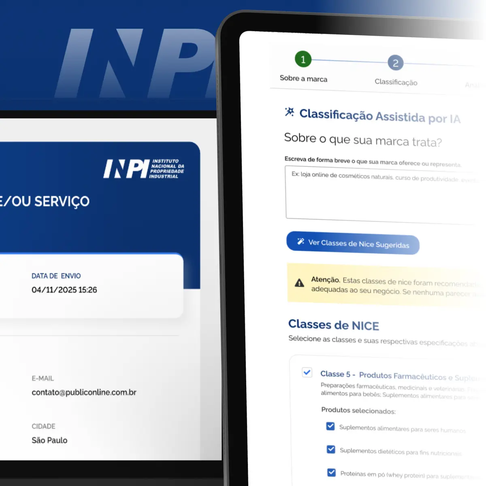
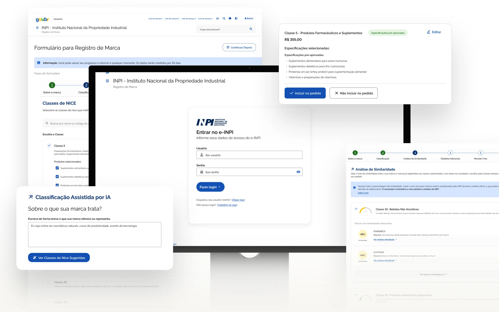

INPI
Desenvolvi a experiência digital do novo sistema de registro de marcas do INPI, integrando inteligência artificial a fluxos governamentais complexos e adaptando o Design System do Governo Federal.

Alinhando IA, regras governamentais e usabilidade
Assumi a frente de Product Design em uma etapa crucial do produto. O desafio era transformar processos burocráticos e extensos de registro de marcas em uma jornada digital fluida, acessível e inteligente.
Desenvolvi a arquitetura dos fluxos no Figma, desenhei a integração de assistentes de IA à interface e criei novos componentes respeitando rigorosamente o Design System do Governo Federal (Gov.br).
Da concepção à homologação presencial
O ciclo de desenvolvimento envolveu colaboração multidisciplinar contínua e um processo rigoroso de aprovações com os times técnicos do órgão federal.
Mapeamento e Requisitos
Trabalhei em parceria com a analista de requisitos e Product Owners para traduzir a legislação de propriedade industrial em regras de negócio e fluxos de telas claros.
Arquitetura de IA e UI
Projetei os componentes de interação para as respostas de inteligência artificial, garantindo transparência, previsibilidade e consistência visual ao sistema.
Ciclos de Refinamento
Conduzi rituais frequentes de validação de interface com POs e desenvolvedores, ajustando a viabilidade técnica e a aderência às diretrizes governamentais.
Validação no Rio de Janeiro
Apresentei o produto presencialmente na sede do INPI no RJ para uma ampla equipe de servidores. Conduzi a sessão de dúvidas, recolhi feedbacks em tempo real e consolidei os ajustes finais.

Aprovado pelo INPI para modernização do serviço público
A solução final foi homologada com sucesso pelas lideranças do INPI. O trabalho entregou uma plataforma pronta para escala, capaz de reduzir a carga cognitiva dos utilizadores e acelerar a análise de registro de marcas no Brasil.
Próximo projeto Aptta